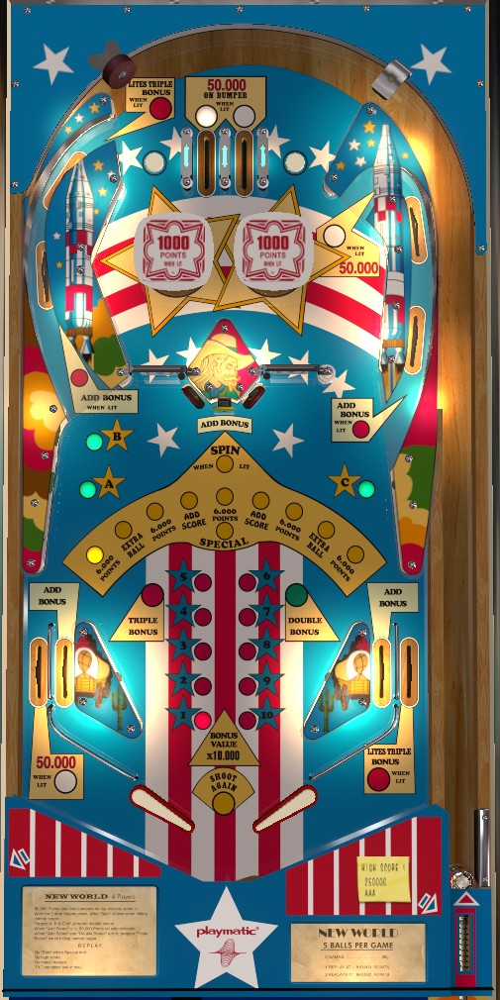

New World is the 4-player version. Conquest 200 is the 1-player version with identical rules and scoring.
Always try to make the top lane lit for 5,000 on the plunge or on any trip to the top of the table. Build base bonus by shooting spinners, or shooting orbits lit for Add Bonus after knocking down center red drop targets. Double the bonus by unlighting A-B-C on the sides of the game. Triple bonus is a largely luck based award at the dangerous center target, so once you have a large double bonus, pivot to shooting the left orbit as much as possible for more chances at top lane 50,000s.
The below picture of New World's playfield was taken from the VPX recreation by JPSalas.

There are 2 top lanes, of which 1 is always lit. Unlit top lanes score 5,000 points, and lit top lanes score 50,000 points plus light the pop bumpers for the rest of the ball. The ball is never forced to make a top lane; to either side of the two top lanes are rollover buttons which score 500 points and alternate which top lane is lit. Bumpers score 100 points or 1,000 when lit.
The red drop targets in the center of the game each score 50,000 points when knocked down. The targets never re-raise unless the ball ends, so they can only be hit once per ball. While the left drop target is down, the lower switch in the left orbit will award a bonus advance in addition to its usual 100 points. The same is true of the lower switch in the right orbit when the right drop target is down.
The yellow center standup target scores 1,000 points and advances the bonus. If both red drop target are down, the yellow center target also awards the currently selected Spin value. There are 10 possible Spin values, and the selected one changes each time a spin is registered by either center spinner (which always score 100 points per spin). There are:
Collecting Add Score lights the left out lane and the upper switch of the right orbit for 50,000 points instead of their usual 10,000. If Double Bonus has been earned, having Add Score collected will light the right out lane and the upper switch of the left orbit for Triple Bonus. Since there's effectively only a 20% chance that the spinner will stop on Add Score, it's generally not worth going for the Triple Bonus itself. Earning a regular Add Score to make the right orbit worth 50,000 can be meaningful, though.
The green targets on the side of the game labelled A-B-C are lit at the start of each ball. These targets score 500 points. Hitting a lit target unlights it. Unlighting all 3 targets on the same ball awards Double Bonus.
Due to a quirk in how the game was wired, there are actually two switches attached to each of these targets. One switch governs the A-B-C lights, and the other scores the 500 points. If you hit one of these targets softly, you may get credit for its associated letter without scoring the 500 points.
Both orbits have two switches. The lower switch scores 100 points, and is lit for Add Bonus after the red drop target on that side of the playfield is knocked down. The upper rollover in each orbit starts at 10,000 points. Activating Add Score at any time makes the right orbit upper switch worth 50,000; having Double Bonus lit and Add Score active makes the left orbit upper switch worth Triple Bonus. The left orbit can only be shot from below and feeds the top of the table, including another chance at a 50,000 point top lane. The right orbit can be shot from above by aiming through the right spinner, or it can be shot from below similar to the left orbit.
New World has a conventional in/out lane setup. In lanes score 1,000 points and a bonus advance. Out lanes score 10,000 points. Activating Add Score at any time makes the left out lane worth 50,000; having Double Bonus lit and Add Score active makes the right out lane worth Triple Bonus.
Bonus is advanced by the center yellow standup target, every 10th spin on either spinner, the lower switch or each orbit after knocking down that side's drop target, or either in lane. Each bonus advance is worth 10,000 points in base bonus. Double Bonus is earned by unlighting all three of the A-B-C targets on the sides of the playfield. Triple Bonus is earned by activating Add Score, lighting Double Bonus, then either shooting the left orbit or draining down the right out lane. Max bonus is 3x 100,000 = 300,000 points. Bonus is very significant for scoring; building base bonus and lighting Double Bonus should always be the first priority on a ball. Triple Bonus is less advisable, since it requires several shots to dangerous center targets and there's no way to guarantee that the spinners will stop on Add Score.
All scoring on New World / Conquest 200 is in increments of 100 points. Since the 10s digit is always 0, the match features uses the last 3 digits of each player's score instead of the usual 2.